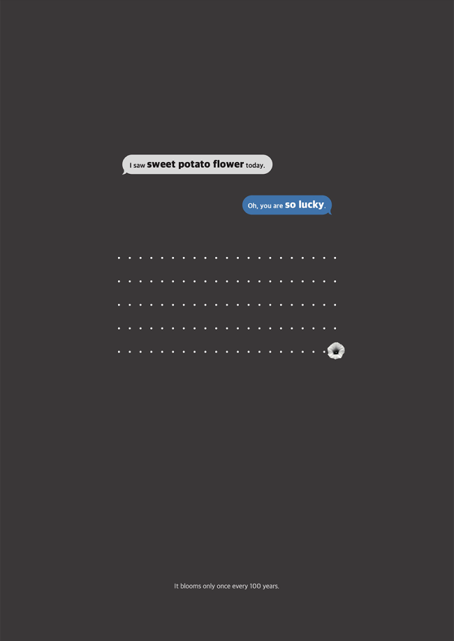
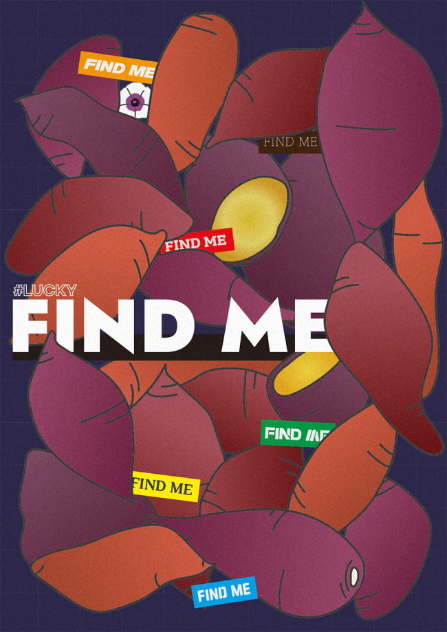
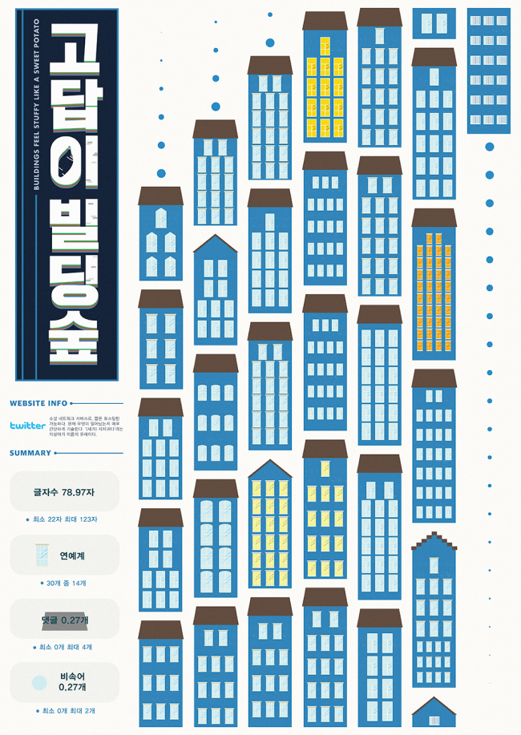
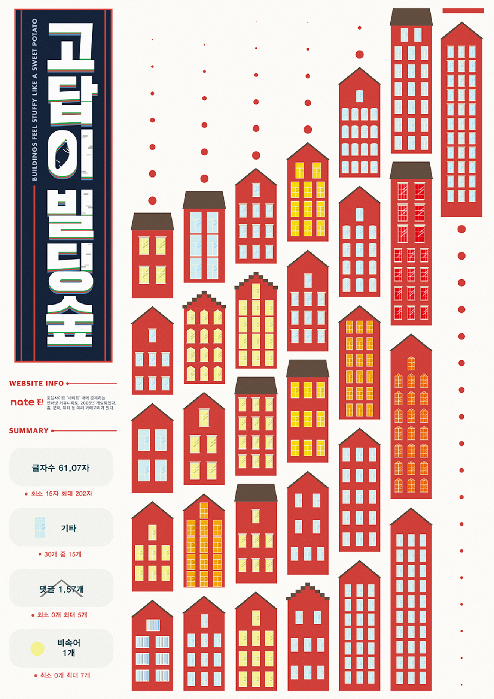
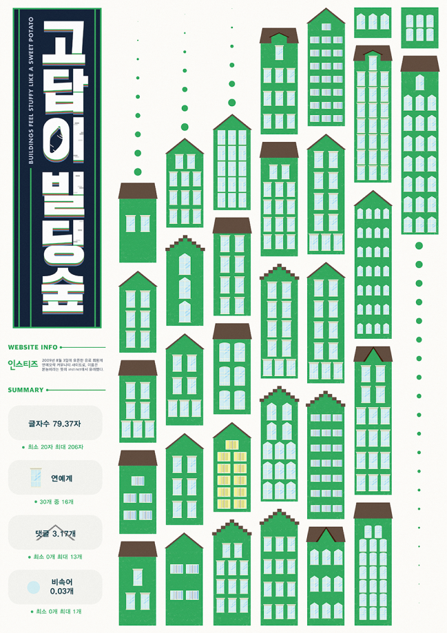

Project
Contact
@eyxyzo
Designer
Vegetable
조혜지
SWEET POTATO IS
Category
Minimal Poster / Maximal Poster / Generative System
리서치 과정에서 파악한 고구마의 특징을 각각 포스터와 제너러티브 시스템으로 표현하였다.
MINIMAL POSTER
MAXIMAL POSTER
GENERATIVE SYSTEM
Poster
Poster
Poster
야채 리서치 과정 중, 고구마 꽃은 희귀하여 행운의 상징임을 알게 되었다. 이를 메시지 대화로 나타냈다.
고구마의 답답함을 드러내기 위에 쌓여있는 것처럼 연출하면서, ‘고구마 꽃의 희귀함’이란 주제를 이어나갔다.
‘고답이’는 고구마처럼 답답한 상황이나 사람을 나타내는 신조어이다.
빼곡하게 나열된 빌딩이 이와 유사하다고 생각하여, 커뮤니티 글을 분석하여 ‘고답이 빌딩숲’을 완성하였다.





x